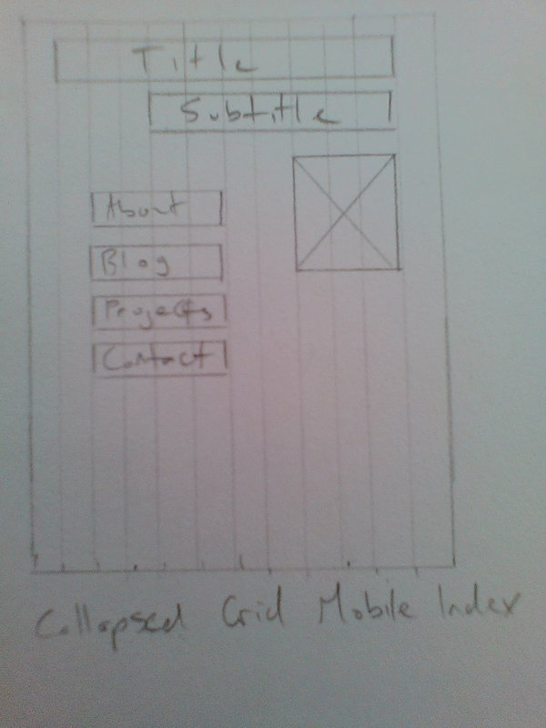
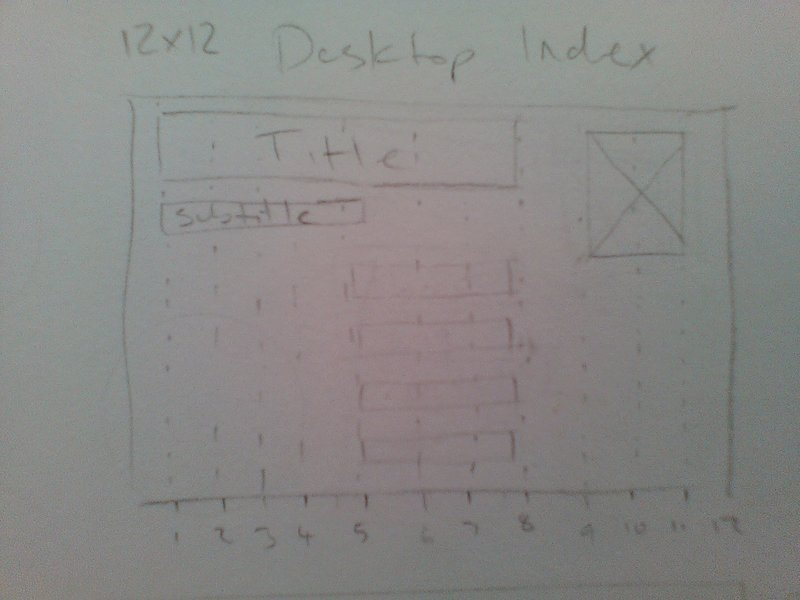

Design to Web Blog
19 December 2015
What a responsive site is, and why responsiveness is important
A responsive site is one which is designed to work well and be usable on a wide range of devices, from smartphones to tablets to laptops to desktop computers with large screens. Responsive design is very important nowadays as a large percentage of those who access the internet only use mobile devices, or devices other than laptop or desktop computers which have for sometime been considered as the default. If a site is not responsive then it is likely that there will be less traffic from mobile users which are a significant percentage of users who might use the site.
What mobile first design is, and why it's important
Mobile first design is implementing design with mobile users in mind right from the start. Designing so that the layout and size of elements on the page will be appropriately displayed on mobile devices first, then considering the display requirements of larger devices secondary. This works by applying new display/layout rules as screen widths increase, rather than the inverse, thereby not forcing smaller (typically less powerful) devices to process code which is not applicable to them and which will significantly slow down page loading times.
What frameworks are, and their pros and cons
A framework in the context of web design & development is a set of tools which can be used to build websites. They provide reusable code to implement certain styles of presentation which can save a lot of time for the developer. These styles can be referenced and used in the new code that is written.
Pros:
Using a framework one is able to reuse code to add functionality and sophisticated presentation styles to your site. This can save a lot of time writing code.
Pages can be more consistent across different browsers using frameworks as these are typically provided for.
Pages can be clean & consistent looking in terms of their layouts.
Cons:
It can be a bit of a learning curve to learn a new framework and how to work with it, therefore increasing time taken to develop a site.
It can sometimes discourage learning the language itself and over-reliance on the framework
You are limited to behaviour imposed by the framework
|  |  |
 |
See also:
What is a framework? (external link)
Pros and cons of frameworks (external link)
What a wireframe is and why we use it
A wireframe is a rough visual guide to how a webpage will look & function once it has been developed. It is typically done before starting to build the page in order to plan the layout and how the user will navigate their way around the site. They will usually consist of hand sketches or other simple drawings done with specifically designed software, illustrating the position of different elements on the page. It should represent the hierarchy of information, with more important information at the top, and less important information further down the page. It functions in a way analogous to how a blueprint does to a builder.
The aspects of your wireframes you found difficult to implement, and why
The thing I had most trouble with was in positioning elements alongside each other on my index page. I think partly this is due to just general difficulties understanding how to layout elements on webpages. Also the fact that when developing pages, there are often many different ways to achieve the same goal, each with different pros and cons. It can be hard to know the right way to achieve your objectives.